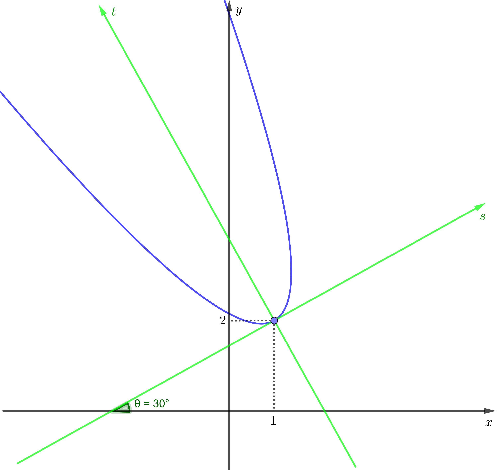

GA 2018.2 – Prof. Fernando Náufel – Trabalho¶
Representando cônicas rotacionadas¶
Alguns programas de computação algébrica permitem especificar uma cônica (por exemplo, uma parábola) do seguinte modo:
A primeira parte da especificação é a equação canônica de uma parábola com vértice no ponto \(V = (1, 2)\) e eixo focal paralelo ao eixo \(Oy\), como na figura abaixo:

Mas a segunda parte da especificação — o ângulo \(\frac{\pi}{6}\) — significa que a parábola está rotacionada de 30 graus em torno do seu vértice, em relação ao sistema de eixos \(Oxy\).
Ou seja, a especificação
representa, na verdade, a seguinte parábola rotacionada:

Este modo de especificar cônicas facilita a nossa vida, pois não precisamos dar a equação geral da parábola rotacionada no sistema \(Oxy\), que é mais trabalhosa de calcular e que tem a forma
(Mas como este é um trabalho, e como o objetivo de todo trabalho é dar trabalho, uma das suas tarefas vai ser exatamente achar esta equação geral.)
Problemas com esta notação¶
Existe um problema aqui.
No curso, vimos que, numa parábola com equação \(y-k = a(x-h)^2\), o foco é o ponto \(F = (h, k+\frac{1}{4a})\).
Vamos calcular as coordenadas do foco da parábola do nosso exemplo:
Aqui, os valores são \(h = 1\), \(k = 2\), \(a = 1\). Então, o foco seria
Certo? Veja a figura:

Errado! Este ponto não é o foco da parábola. O foco da parábola sempre fica sobre o eixo focal (dã…).
Eis o local correto do foco:

O problema é que, embora a equação da parábola use as variáveis \(x\) e \(y\), a equação, na verdade, se baseia em outro sistema de eixos coordenados, rotacionado de \(\frac{\pi}{6}\) radianos a partir do eixo \(Ox\).
(Neste trabalho, uma outra tarefa sua vai ser calcular as coordenadas corretas deste foco, no sistema \(Oxy\))
Vamos mudar nosso sistema de eixos (duas vezes!) para resolver esta confusão.
A equação mais simples para esta parábola¶
No curso, no início da matéria sobre parábolas, usamos um sistema de eixos cuja origem coincidia com o vértice da parábola e cujo eixo vertical coincidia com o eixo focal da parábola.
Vamos fazer a mesma coisa aqui, chamando os eixos de \(s\) e \(t\):
{kind=link}
No novo sistema \(st\), nossa parábola tem a equação mais simples possível:
Perceba que o valor de \(a\) não muda quando fazemos rotações e translações dos eixos coordenados.
Convertendo esta equação para o sistema \(Oxy\)¶
Agora vamos transformar esta equação para o sistema \(Oxy\) original.
O primeiro passo vai ser desfazer a rotação.
Desfazendo a rotação¶
Vamos mudar para um terceiro sistema de coordenadas, cuja origem coincide com a origem do sistema \(st\), mas cujos eixos estão rotacionados para ficar paralelos aos eixos \(Ox\) e \(Oy\).
Vamos chamar este terceiro sistema de \(ij\) e desenhá-lo em vermelho:

Qual o ângulo entre o eixo \(i\) e o eixo \(s\)?
Em outras palavras, qual o ângulo da rotação que temos que desfazer?
O próprio \(\theta\), ora!
As coordenadas \((s, t)\) se relacionam com as coordenadas \((i, j)\) pelas igualdades vistas no curso:
Use estas igualdades para traduzir a equação da parábola do sistema \(st\) para o sistema \(ij\).
Isto é, substitua as variáveis \(s\) e \(t\) na equação \(t = s^2\) e use \(\cos \frac{\pi}{6} = \frac{\sqrt{3}}{2}\) e \(\text{sen }\frac{\pi}{6} = \frac{1}{2}\) para obter uma equação geral no sistema \(ij\) da forma
“Descendo” para o sistema \(Oxy\)¶
Agora só falta fazer uma translação dos eixos \(i\) e \(j\) para baixo e para a esquerda, para chegar ao sistema \(Oxy\).
Olhando para o gráfico, qual você acha que é a relação entre coordenadas no sistema \(ij\) e coordenadas no sistema \(Oxy\)?
Complete as igualdades abaixo:
Em seguida, substitua as variáveis na equação da seção anterior para achar a equação geral da parábola original no sistema \(Oxy\), da forma
Pronto. Você achou a equação geral da parábola original no sistema \(Oxy\).
Suas tarefas¶
Preencha todos os detalhes do raciocínio acima e escreva a equação geral da parábola original no sistema \(Oxy\).
Calcule as coordenadas, no sistema \(Oxy\), do foco da parábola original.
Atenção: aqui, você precisa de igualdades que exprimam \(i\) e \(j\) em função de \(s\) e \(t\), e de igualdades que exprimam \(x\) e \(y\) em função de \(i\) e \(j\).
Escreva a equação, no sistema \(Oxy\), da diretriz da parábola original.
Para cada uma das equações abaixo, escolha os valores reais que você quiser (respeitando as condições) para os parâmetros \(a\), \(b\), \(h\), \(k\) e \(\theta\):
- \(\frac{(x - h)^2}{a^2} + \frac{(y - k)^2}{b^2} = 1\), ângulo \(\theta\)
- \(\frac{(x - h)^2}{a^2} - \frac{(y - k)^2}{b^2} = 1\), ângulo \(\theta\)
Condições:
- \(a, b \neq 0\)
- \(a, b \neq 1\)
- \(a \neq b\)
- \(h, k \neq 0\)
- \(0 < \theta < \frac{\pi}{2}\)
Envie para o grupo da disciplina no Telegram as equações com os valores reais escolhidos. Cada aluno deve escolher um conjunto diferente de valores.
Para cada uma das equações com os valores reais que você deu:
- Desenhe a cônica no sistema de eixos \(Oxy\).
- Desenhe o sistema de eixos \(st\), indicando o ângulo \(\theta\).
- Desenhe o sistema de eixos \(ij\).
- Desenvolva, em detalhes, o raciocínio para achar, no sistema \(Oxy\), a equação geral da cônica.
- Calcule as coordenadas e as equações, no sistema \(Oxy\), de todos
os elementos importantes da cônica:
- Se elipse: vértices (4) e focos (2).
- Se hipérbole: vértices (2), focos (2) e assíntotas (2).
Resumindo: cada aluno (sim, o trabalho é individual) precisa achar as equações e os elementos importantes de uma elipse e uma hipérbole.
Bom trabalho.